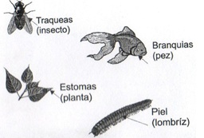

Pregunta de Elección Múltiple Pregunta 1. Se expulsa por la uretra Respuestas Opción 1 Heces fecales Opción 2 Dióxido de carbono Opción 3 Oxigeno Opción 4 Orina Retroalimentación Esta opción no es correcta porque la función de este órgano es eliminar líquidos. Esta opción no es correcta porque la función de este órgano es eliminar líquidos. Esta opción no es correcta porque la función de este órgano es eliminar líquidos. Esta opción es correcta porque la función de este órgano es eliminar líquidos como la orina Solución Incorrecto (Retroalimentación) Incorrecto (Retroalimentación) Incorrecto (Retroalimentación) Opción correcta (Retroalimentación) Pregunta 2. Además, de eliminar los desechos resultantes de la digestión de los alimentos, los animales necesitan deshacerse de los desechos del metabolismo celular y regular el volumen de los líquidos interno. Por lo tanto, la tendencia de mantener en equilibrio las condiciones del organismo se llama: Respuestas Opción 1 HEMODIALISIS Opción 2 CATABOLISMO Opción 3 METABOLISMO Opción 4 HOMEOSTASIS Retroalimentación Esta no es la respuesta correcta porque la pregunta habla del equilibrio interno de los seres vivos Esta no es la respuesta correcta porque la pregunta habla del equilibrio interno de los seres vivos Esta no es la respuesta correcta porque la pregunta habla del equilibrio interno de los seres vivos Esta es la respuesta correcta porque la pregunta habla del equilibrio interno de los seres vivos Solución Incorrecto (Retroalimentación) Incorrecto (Retroalimentación) Incorrecto (Retroalimentación) Opción correcta (Retroalimentación) Pregunta 3. Pedro cada vez que toma la séptima u octava copa de aguardiente siente deseos de ir al baño. Las primeras orinadas son de color amarillento, pero las siguientes son incoloras. En estado de embriaguez se pierde agua del cuerpo porque: Respuestas Opción 1 El alcohol hace que la concentración de agua en el exterior de las células sea menor, saliendo esta por osmosis Opción 2 El alcohol reemplaza el agua de las células por una baja concentración de agua dentro de ellas Opción 3 El agua sale del cuerpo porque el alcohol ejerce una presión osmótica Opción 4 El agua se deposita en alta concentración, en las células explotando, esta agua es la que se pierde Retroalimentación Incorrecto Incorrecto Opción correcta Incorrecto Solución Incorrecto (Retroalimentación) Incorrecto (Retroalimentación) Opción correcta (Retroalimentación) Incorrecto (Retroalimentación) Pregunta 4. En los dibujos, las flechas indican estructuras implicadas en diferentes tipos del mismo proceso de:  Respuestas Opción 1 Incorporación de nutrientes Opción 2 Intercambio de gases Opción 3 Excreción Opción 4 Reproducción Retroalimentación Incorrecto Opción correcta Incorrecto Incorrecto Solución Incorrecto (Retroalimentación) Opción correcta (Retroalimentación) Incorrecto (Retroalimentación) Incorrecto (Retroalimentación) Pregunta 5. La función más importante del riñon es regular la composición de la sangre y ayudar a mantener el equilibrio de líquidos y sales. Según esto, ¿Por qué una falla renal da como resultado la muerte a corto plazo? Respuestas Opción 1 Porque hay una alta concentración de glucosa en la sangre Opción 2 Porque cambia el pH sanguíneo Opción 3 Porque los desechos sanguíneos se desvían hacia el hígado Opción 4 Por la acumulación de sustancias toxicas en la sangre Retroalimentación Incorrecto Incorrecto Incorrecto Opción correcta Solución Incorrecto (Retroalimentación) Incorrecto (Retroalimentación) Incorrecto (Retroalimentación) Opción correcta (Retroalimentación)